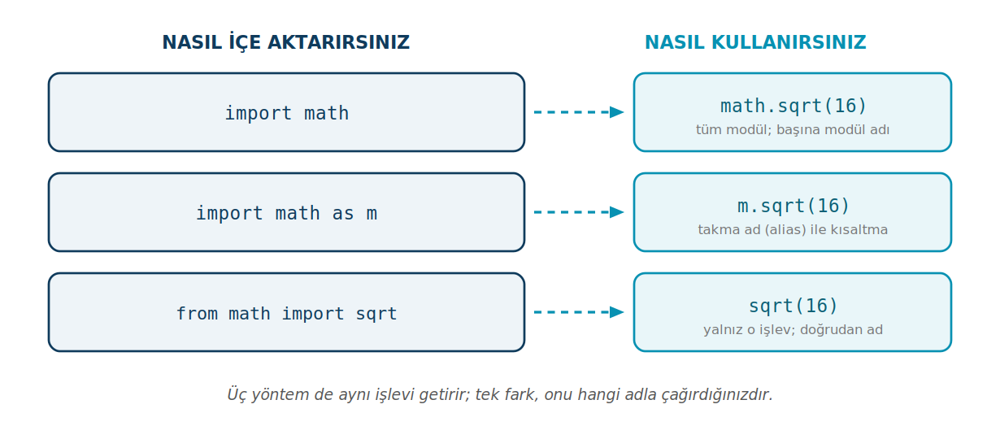

Python'da Modüller
Bir modül, içinde hazır fonksiyonlar, sınıflar ve değişkenler barındıran, yeniden kullanılabilir bir kod dosyasıdır. Bu sayfa import'un biçimlerini, sık kullanılan standart kütüphane modüllerini, kendi modülünüzü yazmayı ve harici modül kurmayı anlatır.
Bu sayfada
1Modül nedir, neden vardır?
Bir program büyüdükçe, her şeyi tek bir dosyaya yığmak zorlaşır. Üstelik kare kök almak, rastgele sayı üretmek, tarih hesaplamak gibi işleri her seferinde sıfırdan yazmak hem zaman kaybıdır hem de hataya açıktır. Bu işlerin pek çoğunu sizden önce birileri yazmış ve test etmiştir; tek yapmanız gereken onları kullanmaktır.
İşte bir modül, içinde hazır fonksiyonlar, sınıflar ve değişkenler barındıran, yeniden kullanılabilir bir kod dosyasıdır. Python "modüler" bir dil olarak tasarlanmıştır: belirli işleri yapan pek çok modül ya doğrudan Python'la birlikte gelir ya da dışarıdan eklenebilir. Bir modülü programınıza dahil etmek için import anahtar kelimesini kullanırsınız.
Modüllerin bize kazandırdığı şey nettir: hazır ve denenmiş kodu yeniden kullanırız, böylece tekerleği yeniden icat etmeyiz; kodumuzu konularına göre ayrı dosyalara bölerek düzenli tutarız; ve binlerce hazır işleve erişerek işimizi hızlandırırız. Python'un kurulumla birlikte gelen bu hazır modüller bütününe standart kütüphane denir — math, random, datetime bunlardan yalnızca birkaçıdır.
2import yöntemleri
Bir modülü kullanmadan önce onu içe aktarmanız gerekir. Bunun üç biçimi vardır ve üçü de aynı işlevi getirir; yalnızca onu hangi adla çağırdığınız değişir.
# 1) Tüm modülü içe aktar import random rastgele_sayi = random.randint(1, 100) # 2) Takma ad (alias) ver import random as rnd print(rnd.choice(['kırmızı', 'mavi', 'yeşil'])) # 3) Yalnızca istenen işlevi al from random import randint sayi = randint(1, 50) # random.randint değil, doğrudan randint
Birinci biçimde modülün işlevlerine random.randint gibi, başına modül adını koyarak ulaşırız. Buradaki nokta, "random modülünün içindeki randint işlevi" demektir. Bu yazım biraz uzun görünebilir ama büyük bir avantajı vardır: kodu okuyan herkes randint'in nereden geldiğini anında anlar.
İkinci biçimde as anahtar kelimesiyle modüle kısa bir takma ad veririz. Bu, özellikle veri biliminde sık görülür; örneğin birçok programcı import numpy as np yazar. Bir modülü yalnızca import random as rnd biçiminde içe aktarırsanız, o programda random adı tanımlı olmaz; modüle yalnızca takma adıyla ulaşırsınız. Yukarıdaki örnekte üç biçim ayrı ayrı gösterildiği için her iki ad da kullanılabilir durumdadır. Üçüncü biçimde ise modülün içinden yalnızca istediğiniz adı alır ve onu doğrudan, başına modül adı koymadan kullanırsınız.

Hangisini ne zaman kullanmalı? Modülden çok sayıda işlev kullanacaksanız import math (tüm modül) en okunaklısıdır. Yalnızca bir-iki işlev kullanacaksanız from math import sqrt daha pratiktir. Ad uzunsa ya da çakışma varsa import ... as ... işinizi görür.
from math import * yazımı modüldeki her şeyi isim alanınıza döker. Bu, hangi adın nereden geldiğini belirsizleştirir ve farklı modüllerdeki aynı isimli işlevlerin birbirini ezmesine yol açabilir. Genel kural: import * kullanmayın.
3Sık kullanılan standart kütüphane modülleri
math modülü; kare kök, faktöriyel, üs, trigonometri gibi matematiksel işlevleri ve pi gibi sabitleri içerir:
import math print(math.sqrt(16)) # 4.0 — kare kök print(math.factorial(5)) # 120 — faktöriyel print(math.pi) # 3.141592653589793 print(math.ceil(4.2)) # 5 — yukarı yuvarlama print(math.floor(4.8)) # 4 — aşağı yuvarlama
random modülü, rastgele sayılar üretmek ve rastgele seçimler yapmak için kullanılır:
import random print(random.randint(1, 6)) # 1-6 arası rastgele tamsayı (zar) print(random.choice(['elma', 'armut', 'kiraz'])) # listeden rastgele bir öğe liste = [1, 2, 3, 4, 5] random.shuffle(liste) # listeyi yerinde karıştırır print(liste)
Bu işlevler her çalıştırmada farklı sonuç verir; bu yüzden örnek çıktıları sabit yazmadık. randint(1, 6) aralığın her iki ucunu da (1 ve 6 dahil) içerir.
datetime modülü tarih ve saat işlemlerini yapar:
from datetime import datetime
su_an = datetime.now()
print(f"Bugünün tarihi ve saati: {su_an}")
print(su_an.year) # yalnızca yıl
print(su_an.day) # yalnızca gün
Burada ince bir ayrıntı var: datetime, hem bir modülün adıdır hem de o modülün içindeki bir sınıfın adı. from datetime import datetime satırı, "datetime modülünün içinden datetime sınıfını al" demektir; biraz kafa karıştırıcı görünse de yaygın bir kalıptır.
4Bir modülü keşfetmek: help() ve dir()
Bir modülün neler sunduğunu merak ettiğinizde Python'a sorabilirsiniz. help() işlevi bir modül ya da fonksiyon hakkında ayrıntılı açıklama verir; dir() ise bir modülün içindeki tüm adların (işlev, sınıf, sabit) listesini verir.
import random help(random) # random modülünün tüm açıklamasını gösterir help(random.randint) # yalnızca randint hakkında bilgi import math print(dir(math)) # math modülündeki her şeyin adı
Bu iki işlev, internete bakmadan, doğrudan kod içinden bir modülü tanımanın en hızlı yoludur.
5Kendi modülünüzü yazmak
Modüller yalnızca Python'la gelenlerle sınırlı değildir; kendi modülünüzü de yazabilirsiniz. Aslında bir modül, içinde fonksiyon ve sınıf bulunan sıradan bir .py dosyasından ibarettir. Örneğin islemler.py adında bir dosya oluşturup içine şunu yazdığınızı düşünün:
def topla(a, b):
return a + b
def carp(a, b):
return a * b
Aynı klasördeki başka bir dosyadan bu modülü, dosya adıyla (.py uzantısı olmadan) içe aktarıp kullanabilirsiniz:
import islemler print(islemler.topla(3, 5)) # 8 print(islemler.carp(4, 6)) # 24
Gördüğünüz gibi kendi yazdığınız modülü de tıpkı math ya da random gibi kullanırsınız. Projeniz büyüdükçe, ilgili fonksiyonları ayrı modüllere bölmek kodunuzu çok daha düzenli ve yönetilebilir kılar.
Kendi dosyanıza random.py ya da math.py gibi bir ad vermeyin. Python gerçek modül yerine sizin dosyanızı içe aktarmaya çalışır ve beklenmedik hatalar oluşur.
6Harici modül kurmak: pip, conda ve Anaconda Navigator
Standart kütüphane modülleri (math, random, datetime) Python ile birlikte gelir; kurulum gerektirmez. Ancak pandas, matplotlib, requests gibi pek çok kullanışlı modül Python'la gelmez; bunları önce kurmanız gerekir. Kurulum bir kez yapılır; sonra normal modüller gibi import edersiniz.
1. pip ile (komut istemi). Python'un standart kurulum aracıdır. Komut istemine (terminale) şunu yazarsınız:
pip install pandas
2. conda ile (Anaconda Prompt). Anaconda kuruluysa, "Anaconda Prompt" penceresini açıp şunu yazabilirsiniz:
conda install pandas
3. Anaconda Navigator arayüzü ile. Komut yazmak istemeyenler için Anaconda Navigator uygulamasında Environments bölümünden paket adını aratıp kutucuğunu işaretleyerek fareyle de kurulum yapılabilir.
Hangi yolu seçerseniz seçin, kurulum bittikten sonra modülü her zamanki gibi import pandas yazarak kullanırsınız.
Anaconda kurulu bir bilgisayarda genellikle conda install (veya Navigator), sade Python kurulumunda ise pip install tercih edilir. Bir modülü kurmadan import etmeye çalışırsanız ModuleNotFoundError alırsınız — bu, "önce kurman gerekiyor" demektir.
7Konu sonu testi
Aşağıdaki beş soruyu kendiniz çözün. Her sorunun altındaki Cevabı göster satırına tıklayınca doğru cevap ve açıklaması açılır.
-
Bir modülü programa dahil etmek için hangi anahtar kelime kullanılır?
- A)
import - B)
include - C)
using - D)
require - E)
module
Cevabı göster
APython'da modüllerimportanahtar kelimesiyle dahil edilir. - A)
-
import mathyaptıktan sonra kare kök işlevi nasıl çağrılır?- A)
sqrt(16) - B)
math:sqrt(16) - C)
math->sqrt(16) - D)
import sqrt(16) - E)
math.sqrt(16)
Cevabı göster
Eimport mathsonrası işlevler modül adıyla çağrılır:math.sqrt(16). - A)
-
from random import randintsatırından sonrarandintnasıl çağrılır?- A)
random.randint(1, 10) - B)
import.randint(1, 10) - C)
randint(1, 10) - D)
from randint(1, 10) - E) Çağrılamaz
Cevabı göster
Cfrom random import randint,randint'i doğrudan kullanılabilir kılar; başınarandom.gerekmez. - A)
-
import math as msatırı ne işe yarar?- A)
mathmodülünü siler - B)
mathmodülünemadında bir takma ad verir - C) Yalnızca
mişlevini alır - D) Yeni bir modül oluşturur
- E) Hata verir
Cevabı göster
Bas, modüle bir takma ad verir; artıkmathyerinemkullanılır. - A)
-
Kendi yazdığınız
islemler.pydosyasını başka bir dosyadan kullanmak için ne yazarsınız?- A)
import islemler.py - B)
include islemler - C)
from islemler.py - D)
import islemler - E)
load islemler
Cevabı göster
DKendi modülünüzü dosya adıyla,.pyuzantısı olmadan içe aktarırsınız:import islemler. - A)
import satırlarını dosyanın en üstüne yazın; böylece hangi modüllere bağımlı olduğunuz tek bakışta görünür. Bir iş yapmadan önce "bunun için hazır bir modül var mı?" diye sormak iyi bir alışkanlıktır. help() ve dir() cebinizdeki kılavuzdur.
Veri Kütüphaneleri — 13. hafta. pandas ve matplotlib gibi harici modüller, bu sayfadaki kurulum ve import ... as ... bilgisinin üzerine kurulur.